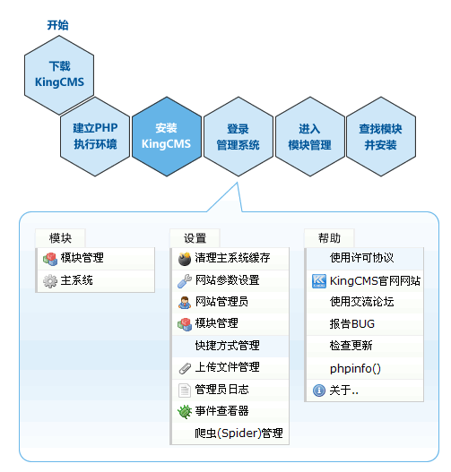

基础部分
大体流程如下：

APMServ比较适合新手建立本地调试环境，是一款拥有图形界面的快速搭建Apache、PHP 5+、MySQL 5+、SQLite、ZendOptimizer、OpenSSL、phpMyAdmin、SQLiteManager，以及ASP、CGI、Perl网站服务器平台的绿色软件。
无需建立IIS环境。
- 请先到http://apmserv.s135.com/ 下载最新版本，解压释放到C:\
- 释放完成后，找到C:\APMServ5.2.X，运行APMServ.exe，Apache工具->虚拟主机设置
虚拟主机域名各填写：localhost
指定网页文件根目录为upload目录，如下：
保存此虚拟主机后退出对话框
- 在APMServ的主面板，点击 启动APMServ，点击访问本地网站。
其他软件来设置PHP环境
安装KingCMS
- 在浏览器中输入：http://localhost/INSTALL.php
- 填写数据库、管理员等参数设置，APMServ环境下，无需多余设置。
- 暂时仅支持MySQL数据库；
- 默认的管理员帐号和密码为admin和admin888；
- 数据缓存目录必须为英文字符和数字构成，支持部分特殊符号；
- 开启错误记录，将可以在事件查看器中看到程序执行过程中产生的错误提示。
注意：这些错误并不影响程序的正常使用，仅作为程序调试之用。
- 选择接受协议，点击安装
- 安装成功后自动跳转到管理员登录页面。请记住这个登录地址：http://localhost/system/login.php
扩展支持SQLite3
以Windows平台为例，*NIX平台下是直接用命令安装，更简单。
- 下载SQLite3.dll
- 拷贝解压得到的sqlite3.dll文件到php5/ext/目录下面
- 打开php.ini文件，找到
extension=php_pdo.dll
extension=php_pdo_sqlite.dll
前面的分号去掉，并补上一行：
extension=sqlite3.dll
- 重启Apache或IIS。
安装时可能出现的错误提示
Parse error: syntax error, unexpected T_STRING, expecting T_OLD_FUNCTION or T_FUNCTION or T_VAR or '}'
in /public_html/kingcms/system/lib/KingCMS.class.php on line 45
出现这种错误是空间不支持PHP5以上的版本，因为KingCMS是按照PHP5.0的标准去编写的，低版本，如支持PHP4的空间里会遇到这种错误。
安装扩展模块
安装模块的方法有如下三种：
- 直接访问扩展模块，如：http://localhost/portal/manage.php则出现安装提示，点击安装即可
- 模块->模块管理->添加模块，填写如：portal 则完成安装
- 查询方式安装：在模块管理里，点击 查找模块 就可以看到可安装的和已安装的模块。点击即可安装。
建议使用第三种查询方式安装